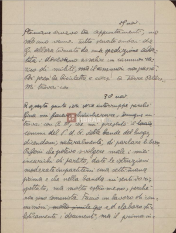
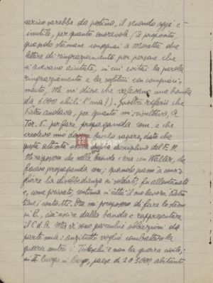

29 nov.novembre
Stamane avevo tre appuntamenti, ma
solo uno venne. Tutto seccato andai da
G.Giorgio Segre allora tornato da una spedizione abor _
tita: dovevano assalire un cammion camion ca _
rico di militi, ma il cammion camion non passò.
Poi presi la bicicletta e corsi a Torre Pellice.
Mi trovai con
30 nov.novembre
A questo punto ieri sera interruppi perchè
Gina mi faceva chiacchierare. Dunque mi
trovai con R.M , che mi presentò il locale
comm.commissario del P.d.A.Partito d'Azione delle bande del luogo,
dicendomi, naturalmente, di parlare libero.
Riferii che potevo svolgere male i miei
incarichi di partito, date le istruzioni
moderate impartitemi una settimana
prima e che nella banda mi sentivo ri _
spettato, ma molto estromesso, perchè
non sono comunista. Faccio un lavoro di com _
missioni , molto simile qu ed elaboro sti _
listicamente i documenti, ma il primo in _
carico sarebbe da postino, il secondo oggi è
inutile, per quanto onorevole (Aa proposito,
quando stamane consegnai a Moretta due
lettere di ringraziamento per persone che
ci avevano aiutato, in cui evitai la parola
ringraziamento e la sostituii con compiaci _
mento, M. Moretta mi disse che volevano una bomba
da 6000 chili l'una?). Inoltre riferii che
Pietro andava, per quanto mi risultava, a
Tor. P. Torre Pellice per fare propaganda com. comunista e che
credevo mio dovere farlo sapere, dato che
questa attività usciva dalla disciplina del F.N.Fronte Nazionale
Mi risposero che nelle loro bande c'era un certo Walter, che
faceva propaganda com comunista ; quando passò a cons _
igliare la disobbedienza ai soldati, fu allontanato
e, come privato, continua in città il suo lavoro. Pietro
tiene i contatti. Ora mi proposero di fare lo stesso
in B. Barge , cioè uscire dalla banda e rappresentare
il P.d.A. Partito d'Azione Ma vi sono parecchie obbiezioni obiezioni da
parte mia: anzitutto voglio combattere la
guerra contro i Tedeschitedeschi e non la guerra civile;
in II luogo in Barge, paese di 2 o 3000 abitanti